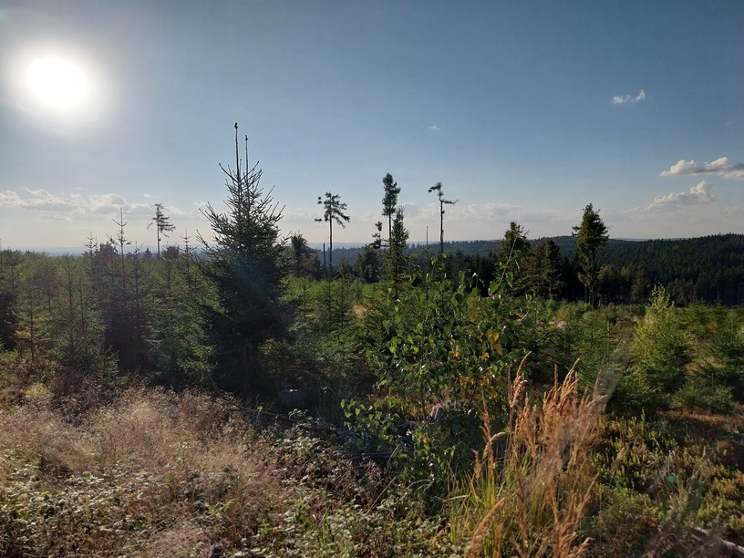
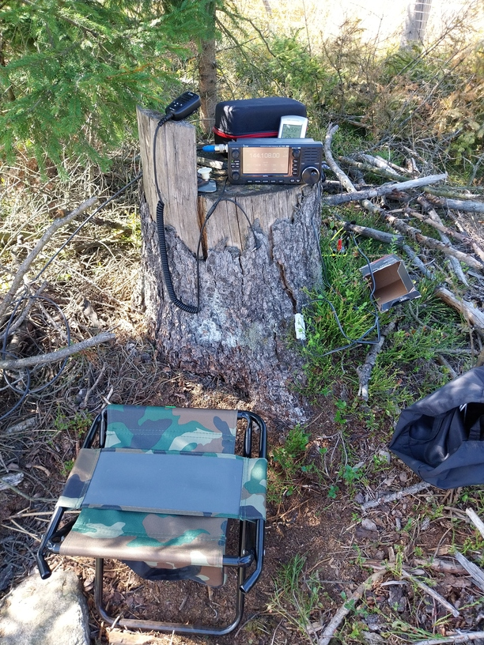

IARU Reg I. VHF Contest 2024
IARU QRP Miniexpedition to JavořiceI always wanted to try the big IARU Region 1 contest overnight from a nice hill in SOTA-tourist style—that means hitchhiking, sleeping bag, everything on your back.
I did some research on interesting locations that aren’t accessible by car. I chose Javořice hill—the highest point of the Vysočina region—and did some receiving experiments during the 3rd IARU VHF/UHF contest with a dipole. I was surprised that, despite a TV transmitter just a few meters behind me, the Icom 705 wasn't overloaded at all. Even with just a dipole, I was able to receive signals from YU and E7 stations on 70 cm. Nice! So, let’s try a full contest from there...
Since I don’t own a car, I used public transport—train and bus—but ran into trouble due to fallen trolley wires between Kardašova Řečice and Jindřichův Hradec. After some delay, a bus finally came. On the way, I even saw the QTH of OK1KKI near Počátky. Because of the delay, I started later than planned, but no stress—weather was lovely, so no need to push it. The goal was simply to enjoy making some nice QSOs. There were a lot of big gun stations around (OK2KAA, OK1KKI, OE1W), but nothing unmanageable. Signal levels were OK. I think the Icom 705 handles in-band IMD very well, even on 144 MHz with such a wide range of signal strengths—and with a multi-kilowatt TV transmitter behind me! I've had good experience with this setup in past contests too.
Thanks to the beautiful weather, I was able to operate the entire contest outdoors, using a great ultralight 6-element Yagi from DK7ZB. The first few QSOs were hard to make—it turned out my beam-heading intuition was off, since I’m more used to contesting in central Czechia. The more southerly location of Javořice really changed things.
There were already CW stations on the lower part of the band. Since I wanted to test the batteries and overall setup, I chose a rather unusual tactic for a small QRP station: I did a lot of CQing in CW. Unfortunately, I didn’t manage to build a portable CW paddle, so I had to rely on an old homemade straight key and the 705’s internal CW memories. Sadly, the way the Icom handles serial numbers drives me crazy—maybe I’m just missing something? What if you want to repeat the number, which is pretty common when running QRP?
Bouncing on a straight key while logging on a virtual Android keyboard was bizarre—but actually efficient. The KST chat in Tucnak is excellent, though I would recommend using an external keyboard (and a stylus). It would be great to be able to transmit CW directly from Android... something to look into later?
This contest definitely exceeded expectations. My goal was just to enjoy a nice overnight outdoor trip and make a few DX QSOs from an interesting hilltop. The clear night sky at the location was absolutely beautiful. Since I hadn’t tested the full setup in a longer contest before, I brought more batteries than I actually needed—good to know for next time. I also learned that my solar panel works, but the power bank doesn’t support Quick Charge. I’ll need to experiment more with QC “tricking” modules.
I worked many stations on 144 MHz with 5 watts—see the log.


